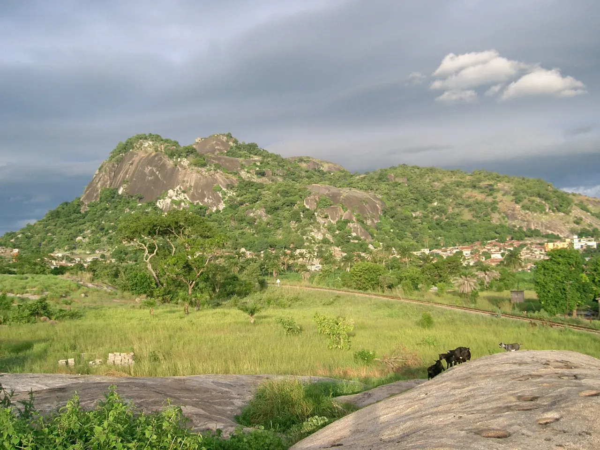
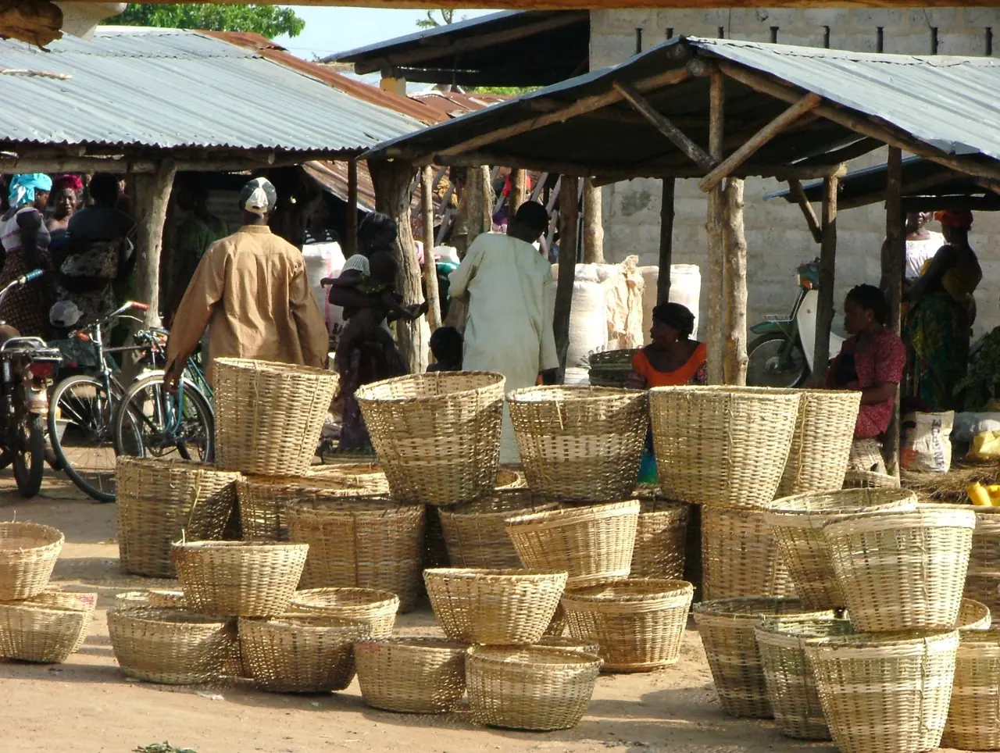

Protéger l’environnement, développer ensemble
Depuis 1993, SOPEDI-ONG agit à Glazoué, au cœur des Collines du Bénin : environnement, santé, éducation et échanges entre le Nord et le Sud.
Une ONG béninoise au service d’un développement durable
SOPEDI-ONG (SOlidarité pour la Protection de l’Environnement et le Développement Intégré) est une organisation non gouvernementale à but non lucratif, créée en novembre 1993 et officiellement reconnue par le Gouvernement du Bénin.
Elle vise un développement durable dans un environnement sain et équilibré, en agissant avec les populations, en particulier en milieu rural.
SolidaritéÉchangeProspérité

Six axes d’action pour le mieux-être des populations
Recherche-action en environnement
Assainissement, gestion des déchets, reboisement et lutte contre la désertification.
Recherche-action en agriculture
Une agriculture durable, des banques de céréales et une meilleure gestion des récoltes.
Participation des jeunes
Associer la jeunesse aux efforts de développement de sa commune.
Art et culture
Promouvoir l’art, la culture et le sport comme leviers de cohésion.
Santé en milieu rural
Appui aux soins de santé primaire : nutrition, planning familial, VIH/SIDA.
Échanges Nord-Sud
Éducation, excellence scolaire et jumelage entre structures du Nord et du Sud.
Une organisation reconnue et agréée
Trois dates structurent l’existence légale de SOPEDI-ONG.
- 1993
Création de l’ONG en novembre, à Glazoué.
- 2001
Reconnaissance officielle par le Gouvernement du Bénin, le 28 septembre (n° 2001/471/MISD/DC/SG/DA/SAAP-ASSOC).
- 2003
Agrément du Ministère chargé des Relations avec les Institutions, la Société Civile et les Béninois de l’Extérieur, le 26 février (n° 229/MCRI-SCBE/DBEVA/SSOCBE).
Glazoué, dans la région des Collines
Le siège de SOPEDI-ONG se trouve dans la commune de Glazoué, à plus de 220 kilomètres de Cotonou, la capitale économique du Bénin.
Les stagiaires y vivent au village, dans des familles d’accueil, et participent à des projets réels avec les équipes locales.
Vivre une expérience internationale au Bénin
Stages de 4 semaines à 6 mois en santé, éducation, environnement, travail social, communication… Inscriptions ouvertes du 1er janvier au 29 décembre.